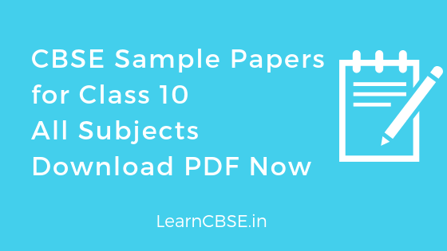

Solved CBSE Sample Papers for Class 10 2020-2021 Pdf with Solutions: CBSE conducts the Class 10 examinations which begin in March. All examination questions are asks from NCERT Books so students need to be conscious of any updates that are made by NCERT. For the examinations, students can also download the Pre Board CBSE Sample Papers for Class 10 with Solutions Answers and practice solving problems can improve your score. By practicing the CBSE Sample Papers of Class 10th, students will learn how to determine question paper patterns and tendencies, answer requirements, forms of trick questions and more.
Board – Central Board of Secondary Education
Class – CBSE Class 10
Subjects – Maths, Science, Social Science, English, English Communicative, Sanskrit, Computer Science, Languages, Accounts and Vocational.
CBSE Sample Papers Class 10 2020 2021 with Solutions
- CBSE Sample Papers for Class 10 Maths (Standard & Basic)
- CBSE Sample Papers for Class 10 Science
- CBSE Sample Papers for Class 10 Social Science
- CBSE Sample Papers for Class 10 English (Language and Literature)
- CBSE Sample Papers for Class 10 Hindi (Course A & B)
- CBSE Sample Papers for Class 10 Sanskrit
- CBSE Sample Papers for Class 10 Computer Applications
- CBSE Sample Papers for Class 10 IT (Information Technology Code 402)
CBSE Sample Papers for Class 10 2020-2021 Pdf with Solutions
| Subject | Sample Question Paper | Marking Scheme |
| CBSE Sample Papers for Class 10 Science | SQP | MS |
| CBSE Sample Papers for Class 10 Elements of Book Keeping and Accountancy | SQP | MS |
| CBSE Sample Papers for Class 10 Elements of Business | SQP | MS |
| CBSE Sample Papers for Class 10 English (Language & Literature) | SQP | MS |
| CBSE Sample Papers for Class 10 Hindi A | SQP | MS |
| CBSE Sample Papers for Class 10 Hindi B | SQP | MS |
| CBSE Sample Papers for Class 10 Home Science | SQP | MS |
| CBSE Sample Papers for Class 10 Computer Application | SQP | MS |
| CBSE Sample Papers for Class 10 Mathematics (Basic) | SQP | MS |
| CBSE Sample Papers for Class 10 Mathematics (Standard) | SQP | MS |
| CBSE Sample Papers for Class 10 Social Science | SQP | MS |
| CBSE Sample Papers for Class 10 NCC | SQP | MS |
| CBSE Sample Papers for Class 10 Hindustani Music (Melodic) | SQP | MS |
| CBSE Sample Papers for Class 10 Hindustani Music (Percussion) | SQP | MS |
| CBSE Sample Papers for Class 10 Hindustani Music (Vocal) | SQP | MS |
| CBSE Sample Papers for Class 10 Carnatic Music-Melodic Instruments | SQP | MS |
| CBSE Sample Papers for Class 10 Carnatic Music-Percussion Instruments | SQP | MS |
| CBSE Sample Papers for Class 10 Carnatic Music-Vocal | SQP | MS |
| CBSE Sample Papers for Class 10 Painting | SQP | MS |
| CBSE Sample Papers for Class 10 Arabic | SQP | MS |
| CBSE Sample Papers for Class 10 Bengali | SQP | MS |
| CBSE Sample Papers for Class 10 Assamese | SQP | MS |
| CBSE Sample Papers for Class 10 Bahasa Melayu | SQP | MS |
| CBSE Sample Papers for Class 10 Bhutia | SQP | MS |
| CBSE Sample Papers for Class 10 Bodo | SQP | MS |
| CBSE Sample Papers for Class 10 French | SQP | MS |
| CBSE Sample Papers for Class 10 German | SQP | MS |
| CBSE Sample Papers for Class 10 Gujarati | SQP | MS |
| CBSE Sample Papers for Class 10 Gurung | SQP | MS |
| CBSE Sample Papers for Class 10 Japanese | SQP | MS |
| CBSE Sample Papers for Class 10 Kannada | SQP | MS |
| CBSE Sample Papers for Class 10 Kashmiri | SQP | MS |
| CBSE Sample Papers for Class 10 Lepcha | SQP | MS |
| CBSE Sample Papers for Class 10 Limboo | SQP | MS |
| CBSE Sample Papers for Class 10 Malayalam | SQP | MS |
| CBSE Sample Papers for Class 10 Manipuri | SQP | MS |
| CBSE Sample Papers for Class 10 Mizo | SQP | MS |
| CBSE Sample Papers for Class 10 Marathi | SQP | MS |
| CBSE Sample Papers for Class 10 Nepali | SQP | MS |
| CBSE Sample Papers for Class 10 Odia | SQP | MS |
| CBSE Sample Papers for Class 10 Persian | SQP | MS |
| CBSE Sample Papers for Class 10 Punjabi | SQP | MS |
| CBSE Sample Papers for Class 10 Rai Language | SQP | MS |
| CBSE Sample Papers for Class 10 Russian | SQP | MS |
| CBSE Sample Papers for Class 10 Sanskrit | SQP | MS |
| CBSE Sample Papers for Class 10 Sherpa | SQP | MS |
| CBSE Sample Papers for Class 10 Sindhi | SQP | MS |
| CBSE Sample Papers for Class 10 Spanish | SQP | MS |
| CBSE Sample Papers for Class 10 Tamil | SQP | MS |
| CBSE Sample Papers for Class 10 Tamang | SQP | MS |
| CBSE Sample Papers for Class 10 Tangkhul | SQP | MS |
| CBSE Sample Papers for Class 10 Telugu AP | SQP | MS |
| CBSE Sample Papers for Class 10 Telugu Telangana | SQP | MS |
| CBSE Sample Papers for Class 10 Thai | SQP | MS |
| CBSE Sample Papers for Class 10 Tibetan | SQP | MS |
| CBSE Sample Papers for Class 10 Urdu A | SQP | MS |
| CBSE Sample Papers for Class 10 Urdu B | SQP | MS |
CBSE Sample Papers 2020 Maths Basic, Maths Standard, Science, Social Science, Hindi, English, and Sanskrit

CBSE Sample Papers for Class 10 2019-20 PDF
| Subject | Sample Question Paper | Marking Scheme |
|---|---|---|
| Class 10 Science | SQP | MS |
| Class 10 Elements of Book Keeping and Accountancy | SQP | MS |
| Class 10 Elements of Business | SQP | MS |
| Class 10 English (Language & Literature) | SQP | MS |
| Class 10 Hindi A | SQP | MS |
| Class 10 Hindi B | SQP | MS |
| Class 10 Home Science | SQP | MS |
| Class 10 Computer Application | SQP | MS |
| Class 10 Mathematics (Basic) | SQP | MS |
| Class 10 Mathematics (Standard) | SQP | MS |
| Class 10 Social Science | SQP | MS |
| Class 10 NCC | SQP | MS |
| Class 10 Hindustani Music (Melodic) | SQP | MS |
| Class 10 Hindustani Music (Percussion) | SQP | MS |
| Class 10 Hindustani Music (Vocal) | SQP | MS |
| Class 10 Carnatic Music-Melodic Instruments | SQP | MS |
| Class 10 Carnatic Music-Percussion Instruments | SQP | MS |
| Class 10 Carnatic Music-Vocal | SQP | MS |
| Class 10 Painting | SQP | MS |
| Class 10 Arabic | SQP | MS |
| Class 10 Bengali | SQP | MS |
| Class 10 Assamese | SQP | MS |
| Class 10 Bahasa Melayu | SQP | MS |
| Class 10 Bhutia | SQP | MS |
| Class 10 Bodo | SQP | MS |
| Class 10 French | SQP | MS |
| Class 10 German | SQP | MS |
| Class 10 Gujarati | SQP | MS |
| Class 10 Gurung | SQP | MS |
| Class 10 Japanese | SQP | MS |
| Class 10 Kannada | SQP | MS |
| Class 10 Lepcha | SQP | MS |
| Class 10 Limboo | SQP | MS |
| Class 10 Malayalam | SQP | MS |
| Class 10 Manipuri | SQP | MS |
| Class 10 Mizo | SQP | MS |
| Class 10 Marathi | SQP | MS |
| Class 10 Nepali | SQP | MS |
| Class 10 Odia | SQP | MS |
| Class 10 Persian | SQP | MS |
| Class 10 Punjabi | SQP | MS |
| Class 10 Rai Language | SQP | MS |
| Class 10 Russian | SQP | MS |
| Class 10 Sanskrit | SQP | MS |
| Class 10 Sherpa | SQP | MS |
| Class 10 Sindhi | SQP | MS |
| Class 10 Spanish | SQP | MS |
| Class 10 Tamil | SQP | MS |
| Class 10 Tamang | SQP | |
| Class 10 Tangkhul | SQP | MS |
| Class 10 Telugu AP | SQP | MS |
| Class 10 Telugu Telangana | SQP | MS |
| Class 10 Thai | SQP | MS |
| Class 10 Tibetan | SQP | MS |
| Class 10 Urdu A | SQP | MS |
| Class 10 Urdu B | SQP | MS |
CBSE Class 10 Mid Term Exam Question Papers and Sample Papers
CBSE Class 10 Mid Term Exam Question Papers are given below subject wise.
- CBSE Class 10th Science Mid-term Paper (DAV) 2019-20
- CBSE Class 10th Science Mid-term Paper (SDV) 2019-20
- CBSE Class 10th Maths Mid-term Paper (DAV) 2019-20
- CBSE Class 10th Maths Mid-term Question Paper (HMS) 2019-20
- CBSE Class 10th Maths Mid-term Question Paper (SDV) 2019-20
- CBSE Class10th Maths mid term Sample paper (DAV) 2019-20
- CBSE Class10th Maths mid term Sample paper (FHSS) 2019-20
- CBSE Class10th Maths mid term Sample paper 1 (PPS) 2019-20
- CBSE Class10th Maths mid term Sample paper 2 (PPS) 2019-20
- CBSE Class10th Science mid term Sample paper (FHSS) 2019-20
- CBSE Class10th Science mid term Sample paper 1 (PPS) 2019-20
- CBSE Class10th Science mid term Sample paper 2 (PPS) 2019-20
- CBSE Class 10 Mid Term Exam Question Paper Maths 2018 – 2019
- CBSE Class 10 Mid Term Exam Question Paper Science 2018 – 2019
- CBSE Class 10 Half Yearly Exam Question Paper 2017-2018 Maths Paper 1
- CBSE Class 10 Half Yearly Exam Question Paper 2017-2018 Maths Paper 2
- CBSE Class 10 Half Yearly Exam Question Paper 2017-2018 Science
- CBSE Sample Papers for Pre Mid Term Exam Class 10 Hindi B Paper 1
- CBSE Sample Papers for Pre Mid Term Exam Class 10 Hindi B Paper 2
- CBSE Sample Papers for Mid Term Exam Class 10 Hindi B Paper 1
- CBSE Sample Papers for Mid Term Exam Class 10 Hindi B Paper 2
- CBSE Sample Papers for Post-Mid Term Exam Class 10 Hindi A – Paper 1
- CBSE Sample Papers for Post-Mid Term Exam Class 10 Hindi A – Paper 2
- CBSE Sample Papers for Pre Mid Term Exam Class 10 Hindi B Paper 1
- CBSE Sample Papers for Pre Mid Term Exam Class 10 Hindi B Paper 2
- CBSE Sample Papers for Mid Term Exam Class 10 Hindi B Paper 1
- CBSE Sample Papers for Mid Term Exam Class 10 Hindi B Paper 2
- CBSE Sample Papers for Post-Mid Term Exam Class 10 Hindi B – Paper 1
- CBSE Sample Papers for Post-Mid Term Exam Class 10 Hindi B – Paper 2
- CBSE Sample Papers for Pre Mid Term Exam Class 10 Communicative English Paper 1
- CBSE Sample Papers for Pre Mid Term Exam Class 10 Communicative English Paper 2
- CBSE Sample Papers for Mid Term Exam Class 10 Communicative English Paper 1
- CBSE Sample Papers for Mid Term Exam Class 10 Communicative English Paper 2
- CBSE Sample Papers for Post-Mid Term Exam Class 10 Communicative English Paper 1
- CBSE Sample Papers for Post-Mid Term Exam Class 10 Communicative English Paper 2
- CBSE Sample Papers for Pre Mid Term Exam Class 10 Social Science Paper 1
- CBSE Sample Papers for Pre Mid Term Exam Class 10 Social Science Paper 2
- CBSE Sample Papers for Mid Term Exam Class 10 Social Science Paper 1
- CBSE Sample Papers for Mid Term Exam Class 10 Social Science Paper 2
- CBSE Sample Papers for Post-Mid Term Exam Class 10 Social Science Paper 1
- CBSE Sample Papers for Post-Mid Term Exam Class 10 Social Science Paper 2

CBSE Sample Papers for Class 10 Maths 2019
- Solved Maths Sample Question Paper 2019 Set 1- PDF Download
- Solved Maths Sample Question Paper 2019 Set 2 – PDF Download
- Solved Maths Sample Question Paper 2019 Set 3
- Solved Maths Sample Question Paper 2019 Set 4
- Solved Maths Sample Question Paper 2019 Set 5
- Solved Maths Sample Question Paper 2019 Set 6
| Year of Examination | Maths Sample Question Paper | Answers/ Marking Scheme |
| 2018-2019 | Download PDF | Download |
| 2017-2018 | Download PDF | Download |
| 2016-2017 | PDF Download | Download |
| 2015-2016 | PDF Download | Download |
CBSE Previous Year Question Papers class 10 Maths
CBSE Sample Papers for Class 10 Science 2019
- Solved Science Sample Question Paper 2019 Set 1
- Solved Science Sample Question Paper 2019 Set 2
- Solved Science Sample Question Paper 2019 Set 3
- Solved Science Sample Question Paper 2019 Set 4
- Solved Science Sample Question Paper 2019 Set 5
- Solved Science Sample Question Paper 2019 Set 6
| Year of Examination | Science Sample Question Paper | Answers/ Marking Scheme |
| 2018-2019 | Download PDF | Download |
| 2017-2018 | Download PDF | Download |
| 2016-2017 | PDF Download | Download |
| 2015-2016 | PDF Download | Download |
CBSE Previous Year Question Papers Class 10 science
CBSE Previous Year Question Papers Class 10 science 2018
| CBSE Previous Year Question Paper Class 10 Social Science 2018 | ||
| Science 2018 (Main Exam) | SET 1 PDF Download | Marking Scheme |
| SET 2 PDF Download | Marking Scheme | |
| SET 3 PDF Download | Marking Scheme | |
| Science 2018 (Compartment) | SET 1 PDF Download | Answers |
| SET 2 PDF Download | Answers | |
| SET 3 PDF Download | Answers | |
Solved CBSE Sample Papers for Class 10 Social Science 2019
- Solved Social Science Sample Question Paper 2019 Set 1
- Solved Social Science Sample Question Paper 2019 Set 2
- Solved Social Science Sample Question Paper 2019 Set 3
- Solved Social Science Sample Question Paper 2019 Set 4
- Solved Social Science Sample Question Paper 2019 Set 5
| Year of Examination | Social Science Sample Question Paper | Answers/ Marking Scheme |
| 2018-2019 | Download PDF | Download |
| 2017-2018 | Download PDF | Download |
| 2016-2017 | PDF Download | Download |
| 2015-2016 | PDF Download | Download |
CBSE Previous Year Question Paper Class 10 Social Science (Last 10 Years)
CBSE Sample Papers for Class 10 English 2019
- English Solved Sample Question Paper 1
- English Solved Sample Question Paper 2
- English Solved Sample Question Paper 3
- English Solved Sample Question Paper 4
- English Solved Sample Question Paper 5
| Year of Examination | English Sample Question Paper | Answers/ Marking Scheme |
| 2018-2019 | Download PDF | Download |
| 2017-2018 | Download PDF | Download |
| 2016-2017 | PDF Download | Download |
| 2015-2016 | PDF Download | Download |
CBSE Previous Year Question Papers Class 10 English
Solved CBSE Sample Papers for Class 10 English Communicative 2019
- English Communicative Solved Sample Question Paper 1
- English Communicative Solved Sample Question Paper 2
- English Communicative Solved Sample Question Paper 3
- English Communicative Solved Sample Question Paper 4
- English Communicative Solved Sample Question Paper 5
| Year of Examination | English Communication Sample Question Paper | Answers/ Marking Scheme |
| 2018-2019 | Download PDF | Download |
| 2017-2018 | Download PDF | Download |
| 2016-2017 | PDF Download | Download |
| 2015-2016 | PDF Download | Download |
CBSE Previous Year Question Papers Class 10 English Communicative 2018
| CBSE Previous Year Question Paper Class 10 English Communicative 2018 | ||
| English Communicative 2018 (Main Exam) | SET 1 PDF Download | Marking Scheme |
| SET 2 PDF Download | Marking Scheme | |
| SET 3 PDF Download | Marking Scheme | |
| English Communicative 2018 (Compartment) | SET 1 PDF Download | Answers |
| SET 2 PDF Download | Answers | |
| SET 3 PDF Download | Answers | |
Solved CBSE Sample paper for Class 10 Hindi A 2019
- Solved Hindi A Sample Question Paper 2019 Set 1
- Solved Hindi A Sample Question Paper 2019 Set 2
- Solved Hindi A Sample Question Paper 2019 Set 3
- Solved Hindi A Sample Question Paper 2019 Set 4
- Solved Hindi A Sample Question Paper 2019 Set 5
| Year of Examination | Hindi A Sample Question Paper | Answers/ Marking Scheme |
| 2018-2019 | Download PDF | Download |
| 2017-2018 | Download PDF | Download |
| 2016-2017 | PDF Download | Download |
| 2015-2016 | PDF Download | Download |
CBSE Previous Year Question Papers Class 10 Hindi
- Hindi A Previous Year Question Paper 2018
- Hindi A Previous Year Question Paper 2017
- Hindi B Previous Year Question Paper 2017
CBSE Sample paper for Class 10 Hindi B 2019
- Solved Hindi B Sample Question Paper 2019 Set 1
- Solved Hindi B Sample Question Paper 2019 Set 2
- Solved Hindi B Sample Question Paper 2019 Set 3
- Solved Hindi B Sample Question Paper 2019 Set 4
- Solved Hindi B Sample Question Paper 2019 Set 5
| Year of Examination | Hindi B Sample Question Paper | Answers/ Marking Scheme |
| 2018-2019 | Download PDF | Download |
| 2017-2018 | Download PDF | Download |
| 2016-2017 | PDF Download | Download |
| 2015-2016 | PDF Download | Download |
CBSE Previous Year Question Papers Class 10 Hindi 2018
| Sample Paper | Hindi A | Hindi B |
| Main Exam Set 1 | Download PDF | Download |
| Main Exam Set 2 | Download PDF | Download |
| Main Exam Set 3 | PDF Download | Download |
| Main Exam Marking Scheme SET 1, 2 and 3 |
PDF Download | Download |
| Compartment Exam Set 1 | Download PDF | Download |
| Compartment Exam Set 2 | Download PDF | Download |
| Compartment Exam Set 3 | PDF Download | Download |
CBSE Sample Paper for Class 10 Sanskrit 2019
- Solved Sanskrit Sample Question Paper 2019 Set 1
- Solved Sanskrit Sample Question Paper 2019 Set 2
- Solved Sanskrit Sample Question Paper 2019 Set 3
- Solved Sanskrit Sample Question Paper 2019 Set 4
- Solved Sanskrit Sample Question Paper 2019 Set 5
| Year of Examination | Sanskrit Sample Question Paper | Answers/ Marking Scheme |
| 2018-2019 | Download PDF | Download |
| 2017-2018 | Download PDF | Download |
| 2016-2017 | PDF Download | Download |
| 2015-2016 | PDF Download | Download |
Sample Papers for Class 10 All subjects 2019:
- Arabic
- Assamese
- Bhutia
- Bengali
- Bahasa Melayu
- Bodo
- Carnatic Music
- e-Publishing and e-Office
- Information and Communication Technology
- Foundation of Information Technology
- Hindustani Music
- Gujrati
- Sindhi
- Sherpa
- Rai Language
- Nepali
- Limboo
- Lepcha
- Gurung
- Manipuri
- Spanish
- Russian
- Punjabi
- Persian
- Painting
- Odia
- Mizo
- Marathi
- Malayalam
- Kannada
- Japanese
- Home Science
- German
- French
- Elements of Business
- Elements of Book Keeping and Accountancy
- NCC
- Tibetan
- Tamang
- Telugu
- Thai
- Tangkhul
- Tamil
- Urdu
Students are encouraged to try sample question papers within the designated time limit. The papers permit the student to find the ideal method and solutions for commonly asked questions. Students are encouraged to solve all of the questions within the prescribed time in order that they might evaluate their areas of strength and focus on those they are weak in.
To attempt board exam students expect a lot of practice in the form of mock tests and sample papers which will prepare and allow them to write the Class 10 CBSE Board Examination with confidence. Since it’s the first board examination a child appears for there is often lots of apprehensions involved. Solving these sample papers boosts confidence and alleviates the anxiety of board examinations that a lot of students have.
We hope the CBSE Sample Questions papers for Class 10 for all subjects, help you. If you have any query regarding Sample Questions papers for Class 10, drop a comment below and we will get back to you at the earliest.